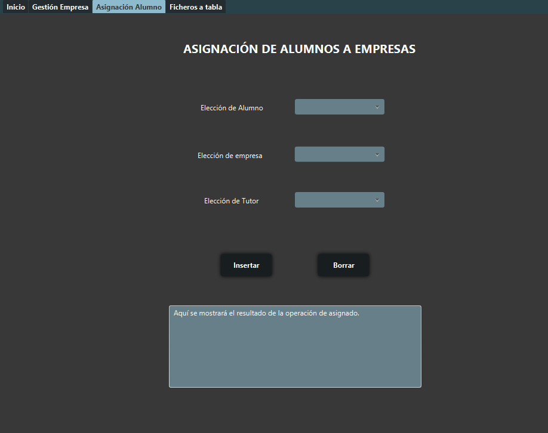

En este apartado de la aplicación se asignarán los alumnos a las empresas para realizar las FCT.
Previamente a poder emplear esta funcionalidad deben haberse añadido empresas con el apartado Gestión de Empresas así como alumnos habiendo pasado los Ficheros a tabla con datos del alumnado a la base de datos.

Una vez cumplidos los requisitos previos, podremos seleccionar con las listas desplegables a un alumno, asignarlo a una empresa y a un tutor disponible..
Para realizar esta operación y dejar constancia de la misma, pulsaremos sobre el botón Insertar.
En caso de que nos hayamos equivocado siempre podremos volver a seleccionar al alumno desde el desplegable y pulsar sobre el botón Borrar, que eliminará la asignación del alumno y lo volverá a dejar disponible para asignarlo a una nueva empresa.